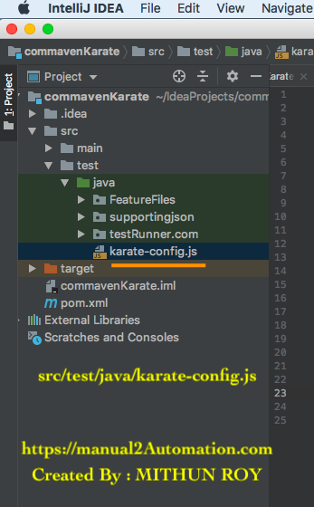

What is karate-config.js file?
karate-config.js file plays animportant role to
store global variables ,
configure request url/header/body/proxy/parameter/authentication ,
Dynamicaly change variable values based on environment. ,
Where to keep karate-config.js file?
We have to keep it in ==> src/test/java

How to call karate-config.js file?
No need to write any separate line to call karate-config.js file , it is called by default. But we must keep this file under src/test/java
Example to use : karate-config.js file?
Below example shows that we are changing request body based on Environment.
Request URL and Request Body are being called from karate-config.js file
function(){
var env = karate.env; // get java system property 'karate.envData' from TestRunner.java
karate.log('karate.envData system property was:', env);
if (!env) {
env = 'dev'; // a custom 'intelligent' default
}
var config = { // base config JSON
requestBodyIs:'{"title": "Welcome To Karate","body": "Karate Automation Framework","userId": 20}'
, requestUrl:'https://jsonplaceholder.typicode.com/posts'
};
if (env == 'QA') {
// over-ride only those that need to be
config.requestBodyIs = '{"title": "Welcome To Karate QA ","QA body": "Karate Automation Framework","userId": 20}';
} else if (env == 'STG') {
config.requestBodyIs = '{"title": "Welcome To Karate STG","STG body": "Karate Automation Framework","userId": 20}';
}
return config;
}
We can pass this environmen value from testRunner.class file as below
System.setProperty("karate.env", "STG"); // For Staging environmen
System.setProperty("karate.env", "QA"); // For QA environmen
System.setProperty("karate.env", "DEV"); // For DEV environmen
package testRunner.com;
import com.intuit.karate.junit4.Karate;
import org.junit.runner.RunWith;
import com.intuit.karate.KarateOptions;
import org.junit.BeforeClass;
@RunWith(Karate.class)
@KarateOptions(features = "classpath:FeatureFiles/karateConfig.feature")
public class TestRunner {
@BeforeClass
public static void before() {
System.setProperty("karate.env", "STG");
}
}
Now 'requestBodyIs' and 'requestUrl' can be called from feature file as below :
######### https://manual2Automation.com ###############
####### Created By :: MITHUN ROY ################
Feature: User wants to check Google URL as GET
Background:
* url requestUrl
* request requestBodyIs
Scenario: Testing String Concat one
Given url 'https://jsonplaceholder.typicode.com/posts'
And header Content-Type = 'application/json; charset=UTF-8'
And method post
Then status 201
And print 'Response is: ', response